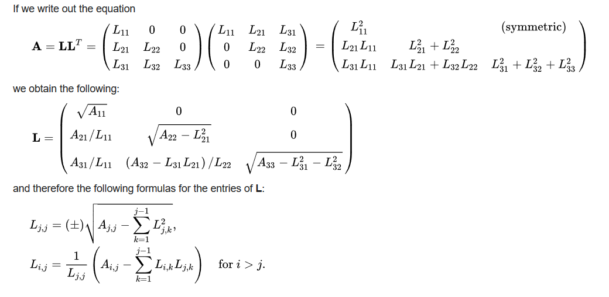

Vitis™ ハードウェア アクセラレーション チュートリアルxilinx.com の Vitis™ 開発環境を参照 |
このモジュール:
1. コレスキー アルゴリズムの説明
2. CPU でのアルゴリズムの実行
アルゴリズムの説明¶
このチュートリアルは、最適化でスループットを最高にする C++ カーネルに基づきます。
アルゴリズムは、一般的な線形代数ソルバーであり、エルミート分解の対称正定値行列正を、下三角行列とその共役転置の積に分解します。この目的のために、コレスキー分解を使用します。このソルバーは、いくつかの数値的な問題、特にモンテカルロ シミュレーションに役立ちます。
このアルゴリズムのシリアル複雑度は O(n3) です。

詳細はウィキペディアを参照: このソルバーは公式の Vitis アクセラレーション ライブラリに含まれます。このソルバーの資料は、https://xilinx.github.io/Vitis_Libraries/solver/2022.1/guide_L2/L2_api.html#potrf を参照してください。
まず、C++ にインプリメントされている簡単な説明から始め、Alveo U50 カードを使用してアクセラレーションに使用する方法を説明します。
CPU でのこのデザインの実行¶
ターミナルを開いて ./docs/cpu_src ディレクトリに移動します。
次のコマンドを実行してデザインをコンパイルします。
g++ cpu_cholesky.cpp test.cpp matrixUtility.hpp -std=c++0x -O3 -o test ./test -M 512 -N 512 -seed 12小さいものや大きいものなど、異なるサイズの行列 (最大サイズは 2048x2048) で実行して、実行時間への影響を測定します。コードを調べて、コレスキー アルゴリズムのインプリメンテーション方法を確認します。
注記 1: サーバーのスタック サイズが制限されている場合、このプログラムは 2048 x 2048 未満の値でセグメンテーション フォルトになる可能性があります。
注記 2: Intel® Xeon® Processor E5-2640 v3 (20M キャッシュ、2.60 GHz) を搭載した Nimbix サーバーでは、アルゴリズムの実行時間は 512 x 512 行列で約 21 ms です。